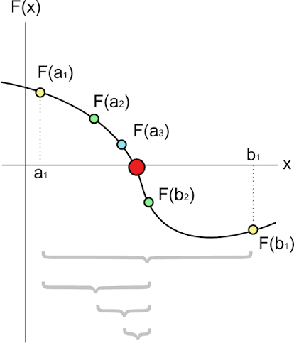
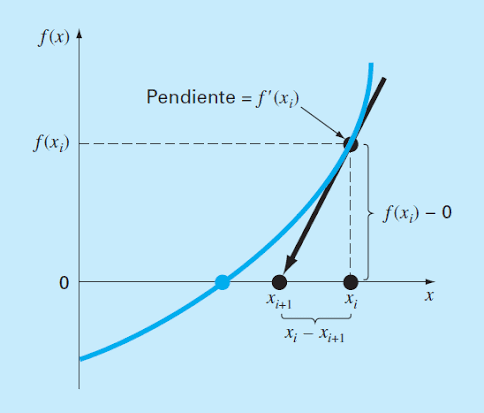
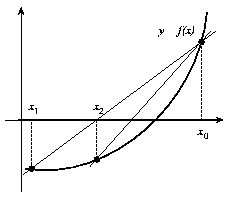
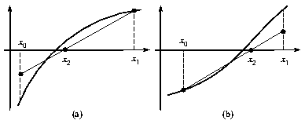

Solucion de Ecuaciones No Lineales

| Aspecto | Descripcion | Detalle |
|---|---|---|
| Condicion inicial | f(a) y f(b) deben tener signos opuestos | f(a)·f(b) < 0 |
| Punto medio | c = (a + b)/2 | Divide el intervalo en dos |
| Criterio de seleccion | Evaluar f(c) y determinar en que subintervalo esta la raiz | Si f(a)·f(c) < 0, la raiz esta en [a,c] |
| Convergencia | Siempre converge si se cumple la condicion inicial | Lineal, error se reduce a la mitad cada iteracion |
| Error | Cota del error en la iteracion n | |Eₙ| ≤ (b-a)/2ⁿ |

Algoritmo:
• Verificar que f(a)·f(b) < 0
• Calcular el punto medio c = (a + b)/2
• Evaluar f(c)
• Si f(c) = 0 (o |f(c)| < ε), c es la raiz
• Si f(a)·f(c) < 0, la raiz esta en [a,c]; sino en [c,b]
• Repetir hasta alcanzar la tolerancia deseada

| Aspecto | Descripcion | Formula |
|---|---|---|
| Formula iterativa | Usa la derivada para aproximar la raiz | xₙ₊₁ = xₙ - f(xₙ)/f'(xₙ) |
| Requisito | La funcion debe ser derivable | f'(x) ≠ 0 cerca de la raiz |
| Convergencia | Cuadratica (muy rapida) | |Eₙ₊₁| ≈ C·|Eₙ|² |
| Desventaja | Puede diverger si x₀ no es adecuado | Depende de la estimacion inicial |
| Aplicacion | Funciones suaves con derivada conocida | Sistemas no lineales (version multivariable) |

Algoritmo:
• Elegir una estimacion inicial x₀ cercana a la raiz
• Calcular f(xₙ) y f'(xₙ)
• Aplicar la formula xₙ₊₁ = xₙ - f(xₙ)/f'(xₙ)
• Evaluar el error |xₙ₊₁ - xₙ| o |f(xₙ₊₁)|
• Repetir hasta que el error sea menor que la tolerancia
• Verificar que la solucion sea valida

| Aspecto | Descripcion | Formula |
|---|---|---|
| Formula iterativa | Aproxima la derivada con diferencias finitas | xₙ₊₁ = xₙ - f(xₙ)(xₙ - xₙ₋₁)/(f(xₙ) - f(xₙ₋₁)) |
| Ventaja | No requiere calcular la derivada analiticamente | Menos costo computacional por iteracion |
| Convergencia | Superlineal (orden ≈ 1.618) | Mas lenta que Newton pero mas rapida que biseccion |
| Requisitos | Dos estimaciones iniciales x₀ y x₁ | No necesitan encerrar la raiz |
| Desventaja | Puede diverger como Newton | Requiere dos evaluaciones por iteracion |

Algoritmo:
• Elegir dos estimaciones iniciales x₀ y x₁
• Calcular f(x₀) y f(x₁)
• Aplicar la formula de la secante para obtener x₂
• Desplazar: x₀ = x₁, x₁ = x₂
• Repetir hasta alcanzar la tolerancia deseada
• Comparar con Newton: evita derivadas pero converge mas lento

| Aspecto | Descripcion | Formula |
|---|---|---|
| Fundamento | Similar a la secante pero con intervalo cerrado | c = a - f(a)(b-a)/(f(b)-f(a)) |
| Ventaja | Siempre converge al mantener el intervalo | Combina robustez de biseccion con velocidad de secante |
| Convergencia | Lineal (peor que secante en algunos casos) | Puede estancarse en un extremo |
| Mejora | Metodo de Illinois o Pegasus | Modificaciones para acelerar convergencia |
| Aplicacion | Cuando se requiere garantia de convergencia | Funciones continuas en [a,b] |

Algoritmo:
• Verificar que f(a)·f(b) < 0 (metodo cerrado)
• Calcular c usando la formula de interpolacion lineal
• Evaluar f(c)
• Si f(a)·f(c) < 0, la raiz esta en [a,c]; sino en [c,b]
• Actualizar el intervalo y repetir
• La diferencia con biseccion: c no es el punto medio, sino la interseccion de la secante
| Metodo | Tipo | Convergencia | Requiere derivada | Garantia de convergencia |
|---|---|---|---|---|
| Biseccion | Cerrado | Lineal (lenta) | No | Si |
| Newton-Raphson | Abierto | Cuadratica (rapida) | Si | No |
| Secante | Abierto | Superlineal | No | No |
| Falsa Posicion | Cerrado | Lineal | No | Si |